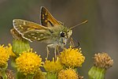
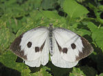
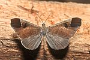
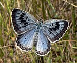
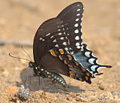
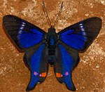
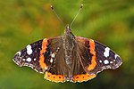

Taxonomy and phylogeny
The earliest Lepidoptera fossils date to the Triassic-Jurassic boundary, around 200 million years ago. Butterflies evolved from moths, so while the butterflies are monophyletic (forming a single clade), the moths are not. The oldest known butterfly is Protocoeliades kristenseni from the Palaeocene aged Fur Formation of Denmark, approximately 55 million years old, which belongs to the family Hesperiidae (skippers). Molecular clock estimates suggest that butterflies originated sometime in the mid-Cretaceous, but only significantly diversified during the Cenozoic. The oldest American butterfly is the Late Eocene Prodryas persephone from the Florissant Fossil Beds,approximately 34 million years old.
Traditionally, butterflies have been divided into the superfamily Papilionoidea excluding the smaller groups of the Hesperiidae (skippers) and the more moth-like HedylidaeHedylidae of America. Phylogenetic analysis suggests that the traditional Papilionoidea is paraphyletic with respect to the other two groups, so they should both be included within Papilionoidea, to form a single butterfly group, thereby synonymous with the clade Rhopalocera.
| Family | Common name | Characteristics | Image |
|---|---|---|---|
| Hedylidae | American moth-butterflies | Small, brown, like geometrid moths; antennae not clubbed; long slim abdomen |  |
| Hesperiidae | Skippers | Skippers |  |
| Lycaenidae | Blues, coppers, hairstreak | Small, brightly coloured; often have false heads with eyespots and small tails resembling antennae |  |
| Nymphalidae | Brush-footed or four-footed butterflies | Usually have reduced forelegs, so appear four-legged; often brightly coloured |  |
| Papilionidae | Swallowtails | Often have 'tails' on wings; caterpillar generates foul taste with osmeterium organ; pupa supported by silk girdle |  |
| Pieridae | Whites and allies | Mostly white, yellow or orange; some serious pests of Brassica; pupa supported by silk girdle |  |
| Riodinidae | Metalmarks | Often have metallic spots on wings; often conspicuously coloured with black, orange and blue |  |